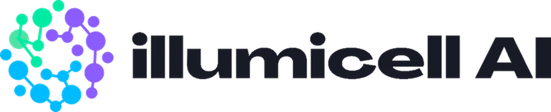

LuceDX
Hardware lead for the lensless digital imaging platform behind illumicell's AI-powered diagnostics.
Details
Context
illumicell AI builds AI-powered diagnostics. LuceDX is the lensless digital imaging platform behind it, working toward a 510(k) submission.
Role
Head of Hardware.
What I do
- Own overall system architecture, electromechanical design, and selection of critical sensors and optics.
- Lead the hardware through Alpha and Beta design cycles toward a 510(k).
- Manage external engineering partners: product design firms, EE and optical consultants, and key component suppliers.
- Bring design-control, design-transfer and field-reliability lessons from Hologic's De Novo launch to an early-stage program.